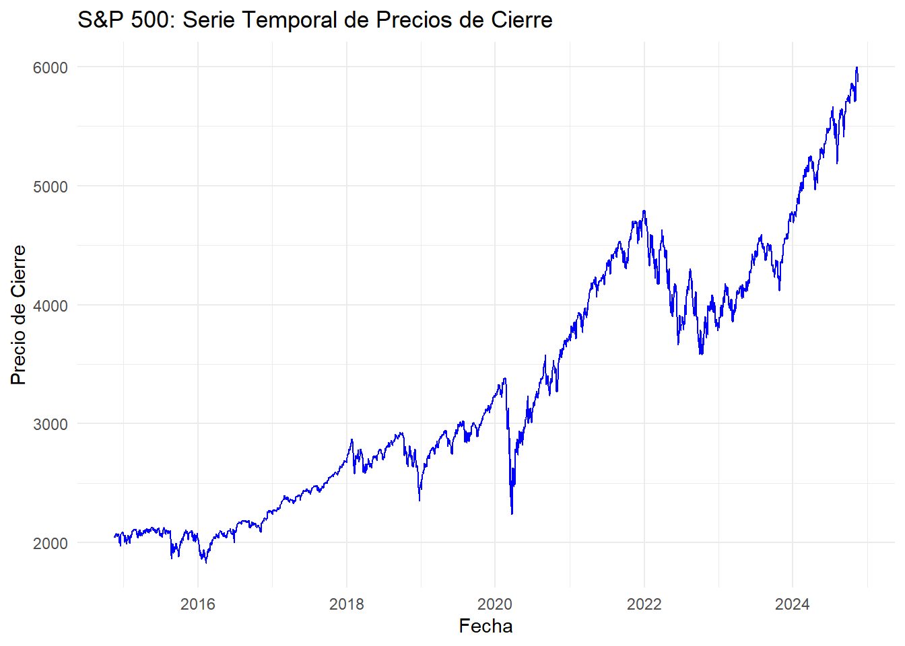
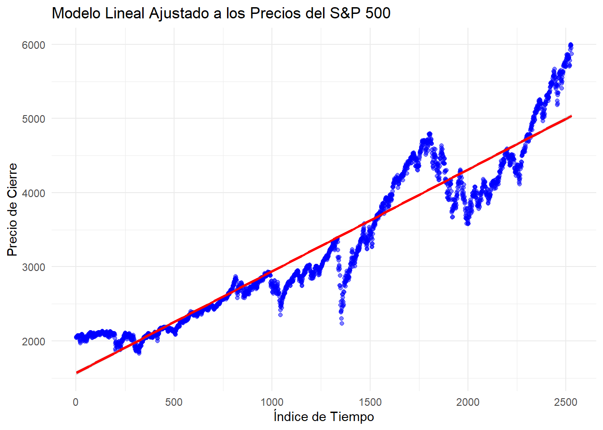
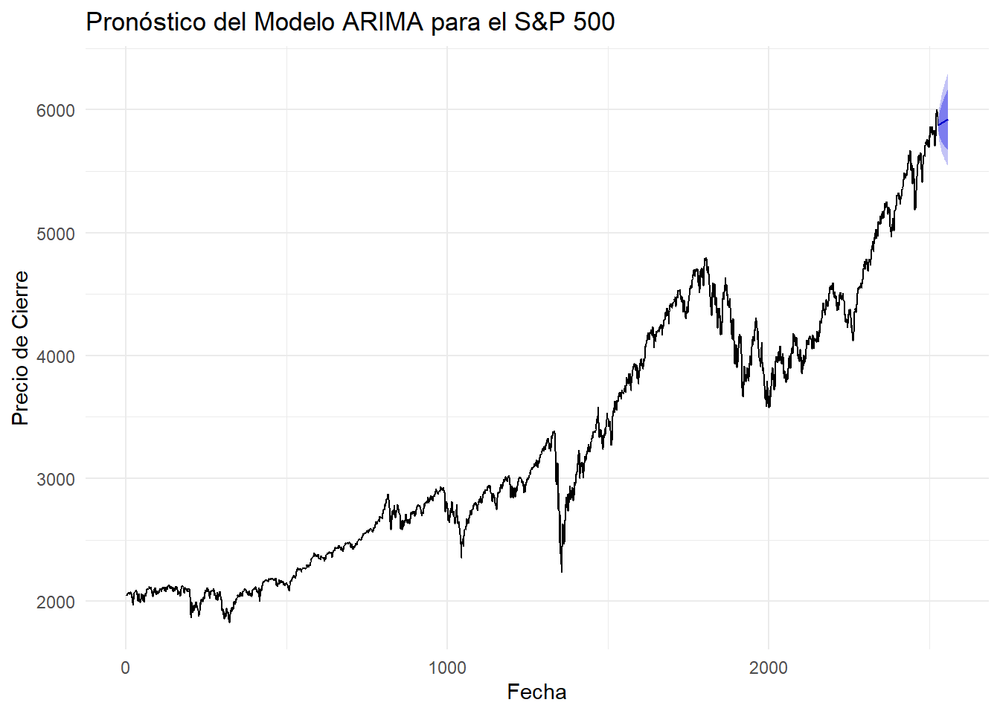

5 Variables en el tiempo, el ajuste a un modelo lineal y estacionario.
5.1 Introducción.
En este capítulo se analiza la dinámica temporal de las variables del índice S&P 500 para comprender sus tendencias y patrones a lo largo del tiempo. El enfoque principal incluye la evaluación de las variables clave, el ajuste de un modelo lineal que capture relaciones significativas y la validación de la estacionariedad en la serie.
5.2 Perparación de Datos.
Para analizar la dinámica temporal del índice S&P 500, se inició con la transformación de la columna Date al formato adecuado de fecha, lo que permite realizar análisis temporales y ajustar modelos basados en el tiempo.
# Prepare the dataset for Prophet
spx_data_prepared <- spx_data %>%
rename(ds = Date, y = `Close/Last`) %>%
arrange(ds)
# Check the prepared dataset
head(spx_data_prepared)## # A tibble: 6 × 5
## ds y Open High Low
## <date> <dbl> <dbl> <dbl> <dbl>
## 1 2014-11-17 2041. 2038. 2043. 2034.
## 2 2014-11-18 2052. 2041. 2056. 2041.
## 3 2014-11-19 2049. 2051. 2052. 2040.
## 4 2014-11-20 2053. 2046. 2054. 2040.
## 5 2014-11-21 2064. 2057. 2071. 2057.
## 6 2014-11-24 2069. 2065. 2070. 2065.5.3 Análisis de las Variables en el Tiempo.
Para comprender las dinámicas temporales del índice S&P 500, se realiza un análisis exploratorio de la serie temporal.
# Load the ggplot2 library for creating visualizations
library(ggplot2)
# Create a line plot to visualize the time series of closing prices
ggplot(spx_data_prepared, aes(x = ds, y = y)) +
geom_line(color = "blue") + # Plot a blue line for the series
labs(
title = "S&P 500: Serie Temporal de Precios de Cierre",
x = "Fecha", # Label for the x-axis
y = "Precio de Cierre" # Label for the y-axis
) +
theme_minimal() # Apply a minimal theme for better aesthetics
La serie temporal del índice S&P 500 muestra una tendencia creciente a lo largo del tiempo, con caídas notables durante 2020, posiblemente relacionadas con la crisis económica derivada de la pandemia de COVID-19. Posteriormente, se observa una recuperación significativa y un crecimiento continuo hasta 2024, destacando el comportamiento positivo reciente del mercado.
5.4 Ajuste de un Modelo Lineal
En este apartado, se ajustó un modelo de regresión lineal para describir la relación entre el tiempo y los precios de cierre del índice S&P 500.
# Create a time index to represent the progression of dates numerically
spx_data_prepared$time_index <- seq_along(spx_data_prepared$ds)
# Fit a linear regression model: closing prices (y) as a function of time index
linear_model <- lm(y ~ time_index, data = spx_data_prepared)
# Display the summary of the linear model
summary(linear_model)##
## Call:
## lm(formula = y ~ time_index, data = spx_data_prepared)
##
## Residuals:
## Min 1Q Median 3Q Max
## -1191.35 -215.11 -41.52 231.06 969.98
##
## Coefficients:
## Estimate Std. Error t value Pr(>|t|)
## (Intercept) 1.568e+03 1.312e+01 119.6 <2e-16 ***
## time_index 1.372e+00 8.984e-03 152.7 <2e-16 ***
## ---
## Signif. codes: 0 '***' 0.001 '**' 0.01 '*' 0.05 '.' 0.1 ' ' 1
##
## Residual standard error: 329.6 on 2526 degrees of freedom
## Multiple R-squared: 0.9023, Adjusted R-squared: 0.9022
## F-statistic: 2.333e+04 on 1 and 2526 DF, p-value: < 2.2e-16A pesar de su robustez en capturar la tendencia general, el modelo no explica completamente las fluctuaciones de corto plazo, como lo refleja un error estándar residual de 329.6 unidades. Esto indica que el ajuste lineal es adecuado para entender la dinámica a largo plazo, pero insuficiente para captar variaciones puntuales o eventos atípicos.
5.5 Visualización del Modelo Lineal
El modelo lineal ajustado muestra que el precio de cierre del S&P 500 tiene una tendencia positiva significativa a lo largo del tiempo, con un crecimiento promedio de 1.372 unidades por incremento del índice temporal. El modelo explica el 90.23% de la variación observada en los datos. Sin embargo, se observan fluctuaciones en los precios que no son capturadas por el modelo, lo que indica que este ajuste puede no ser suficiente para representar las dinámicas de corto plazo del índice.
# Plot the data points and the fitted linear regression line
ggplot(spx_data_prepared, aes(x = time_index, y = y)) +
geom_point(alpha = 0.5, color = "blue") + # Scatter plot of data points
geom_smooth(method = "lm", color = "red") + # Linear regression line
labs(
title = "Modelo Lineal Ajustado a los Precios del S&P 500",
x = "Índice de Tiempo",
y = "Precio de Cierre"
) +
theme_minimal()
5.6 Evaluación de Estacionariedad
La estacionariedad es un requisito clave para ciertos modelos de series temporales, como ARIMA. Evaluaremos si la serie del S&P 500 es estacionaria mediante la prueba de Dickey-Fuller aumentada (ADF). Si la serie no es estacionaria, aplicaremos una transformación (como la diferenciación).
# Load the tseries library for the Augmented Dickey-Fuller test
library(tseries)
# Perform the ADF test on the closing prices
adf_test <- adf.test(spx_data_prepared$y, alternative = "stationary")
# Print the p-value to determine stationarity
adf_test$p.value## [1] 0.51040025.7 Ajuste del Modelo ARIMA
Se ajustó un modelo ARIMA(2,1,2) con deriva a la serie temporal del índice S&P 500. Este modelo combina dos términos autorregresivos, una diferenciación para estacionarizar la serie, y dos términos de media móvil. Los coeficientes estimados son estadísticamente significativos, lo que respalda la validez del modelo. Las métricas obtenidas, como un 𝑅𝑀𝑆𝐸 = 36.2988, indican que el modelo ofrece un buen nivel de precisión en sus predicciones.
# Load the forecast library for ARIMA modeling
library(forecast)
# Fit an ARIMA model to the original series
arima_model <- auto.arima(spx_data_prepared$y)
# Display the summary of the ARIMA model
summary(arima_model)## Series: spx_data_prepared$y
## ARIMA(2,1,2) with drift
##
## Coefficients:
## ar1 ar2 ma1 ma2 drift
## -1.7599 -0.8765 1.6937 0.7924 1.6052
## s.e. 0.0310 0.0311 0.0389 0.0392 0.6924
##
## sigma^2 = 1321: log likelihood = -12662.71
## AIC=25337.41 AICc=25337.44 BIC=25372.42
##
## Training set error measures:
## ME RMSE MAE MPE MAPE MASE
## Training set -0.0921706 36.2988 24.14279 -0.01854978 0.7267593 0.9963291
## ACF1
## Training set 0.01486246# Forecast the next 30 time periods
forecast_arima <- forecast(arima_model, h = 30)
# Plot the forecast
autoplot(forecast_arima) +
labs(
title = "Pronóstico del Modelo ARIMA para el S&P 500",
x = "Fecha",
y = "Precio de Cierre"
) +
theme_minimal()
El grafico muestra el pronóstico del modelo ARIMA para los próximos 30 periodos. Las predicciones reflejan la tendencia ascendente observada en los datos históricos, con un rango de incertidumbre moderado. Este modelo es útil tanto para comprender el comportamiento pasado como para proyectar posibles escenarios futuros del índice S&P 500.
5.8 Conclusiones
El análisis de la serie temporal del índice S&P 500 permitió identificar tendencias y patrones clave, así como realizar pronósticos confiables basados en modelos estadísticos. Los principales hallazgos se resumen a continuación:
Tendencia y Comportamiento General:
La serie temporal del S&P 500 mostró una clara tendencia ascendente durante el período analizado, reflejando el crecimiento sostenido del mercado en los últimos años. Sin embargo, se observaron fluctuaciones importantes durante eventos específicos, como la crisis de 2020, que interrumpieron temporalmente esta tendencia. Ajuste del Modelo Lineal:
El modelo lineal ajustado capturó la tendencia general de los precios de cierre, explicando el 90.23% de la variación en los datos. Este modelo es útil para comprender el comportamiento a largo plazo, pero no logró captar adecuadamente las fluctuaciones de corto plazo, como caídas abruptas o picos inusuales. Modelo ARIMA y Pronósticos:
El modelo ARIMA(2,1,2) con deriva proporcionó una representación más precisa de la serie temporal, modelando tanto la tendencia como las variaciones de corto plazo. Este modelo fue utilizado para realizar pronósticos de los próximos 30 períodos, que reflejaron una continuación de la tendencia ascendente del índice, con un rango moderado de incertidumbre. Implicaciones del Análisis:
Los resultados obtenidos ofrecen una herramienta sólida para analizar el comportamiento histórico y proyectar escenarios futuros del índice S&P 500, lo que puede ser útil para la toma de decisiones estratégicas en el contexto financiero.